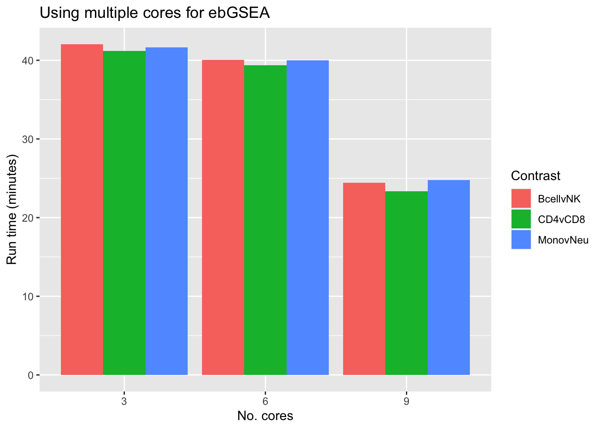
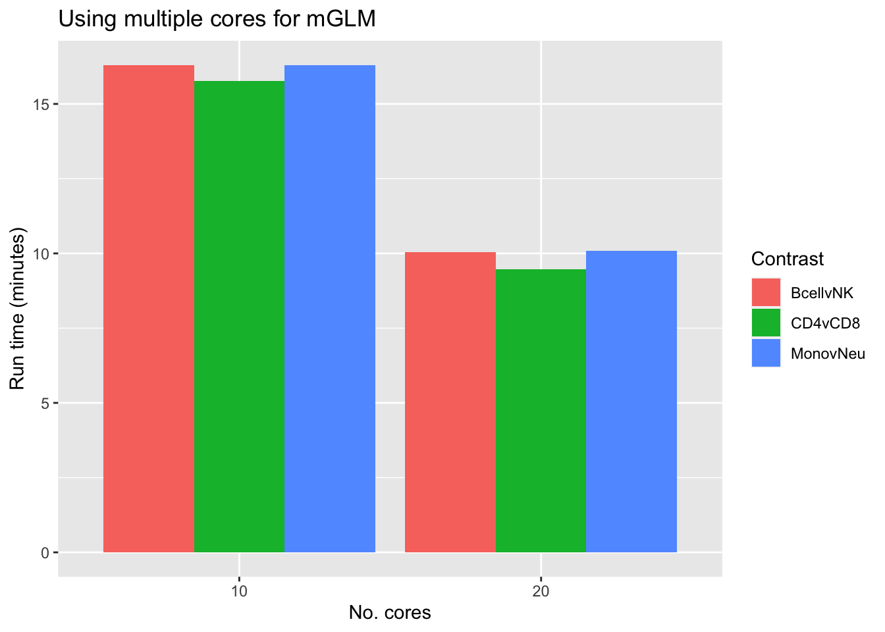
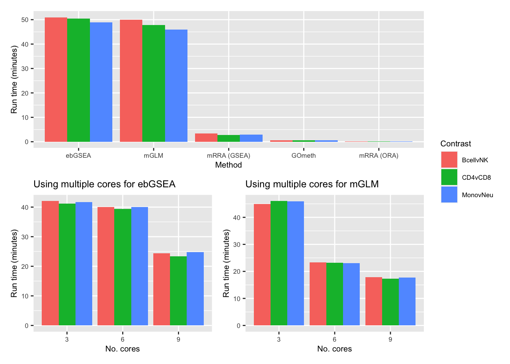

Gene set testing for Illumina HumanMethylation Arrays
Comparing the run-time of different methods
Jovana Maksimovic, Alicia Oshlack and Belinda Phipson
April 13, 2021
Last updated: 2021-04-13
Checks: 7 0
Knit directory: methyl-geneset-testing/
This reproducible R Markdown analysis was created with workflowr (version 1.6.2). The Checks tab describes the reproducibility checks that were applied when the results were created. The Past versions tab lists the development history.
Great! Since the R Markdown file has been committed to the Git repository, you know the exact version of the code that produced these results.
Great job! The global environment was empty. Objects defined in the global environment can affect the analysis in your R Markdown file in unknown ways. For reproduciblity it's best to always run the code in an empty environment.
The command set.seed(20200302) was run prior to running the code in the R Markdown file. Setting a seed ensures that any results that rely on randomness, e.g. subsampling or permutations, are reproducible.
Great job! Recording the operating system, R version, and package versions is critical for reproducibility.
Nice! There were no cached chunks for this analysis, so you can be confident that you successfully produced the results during this run.
Great job! Using relative paths to the files within your workflowr project makes it easier to run your code on other machines.
Great! You are using Git for version control. Tracking code development and connecting the code version to the results is critical for reproducibility.
The results in this page were generated with repository version 62fdddc. See the Past versions tab to see a history of the changes made to the R Markdown and HTML files.
Note that you need to be careful to ensure that all relevant files for the analysis have been committed to Git prior to generating the results (you can use wflow_publish or wflow_git_commit). workflowr only checks the R Markdown file, but you know if there are other scripts or data files that it depends on. Below is the status of the Git repository when the results were generated:
Ignored files:
Ignored: .DS_Store
Ignored: .Rhistory
Ignored: .Rproj.user/
Ignored: analysis/figures.nb.html
Ignored: code/.DS_Store
Ignored: code/.Rhistory
Ignored: code/.job/
Ignored: code/old/
Ignored: data/.DS_Store
Ignored: data/annotations/
Ignored: data/cache-intermediates/
Ignored: data/cache-region/
Ignored: data/cache-rnaseq/
Ignored: data/cache-runtime/
Ignored: data/datasets/.DS_Store
Ignored: data/datasets/GSE110554-data.RData
Ignored: data/datasets/GSE120854/
Ignored: data/datasets/GSE120854_RAW.tar
Ignored: data/datasets/GSE135446-data.RData
Ignored: data/datasets/GSE135446/
Ignored: data/datasets/GSE135446_RAW.tar
Ignored: data/datasets/GSE45459-data.RData
Ignored: data/datasets/GSE45459_Matrix_signal_intensities.txt
Ignored: data/datasets/GSE45460/
Ignored: data/datasets/GSE45460_RAW.tar
Ignored: data/datasets/GSE95460_RAW.tar
Ignored: data/datasets/GSE95460_RAW/
Ignored: data/datasets/GSE95462-data.RData
Ignored: data/datasets/GSE95462/
Ignored: data/datasets/GSE95462_RAW/
Ignored: data/datasets/SRP100803/
Ignored: data/datasets/SRP125125/.DS_Store
Ignored: data/datasets/SRP125125/SRR6298*/
Ignored: data/datasets/SRP125125/SRR_Acc_List.txt
Ignored: data/datasets/SRP125125/SRR_Acc_List_Full.txt
Ignored: data/datasets/SRP125125/SraRunTable.txt
Ignored: data/datasets/SRP125125/multiqc_data/
Ignored: data/datasets/SRP125125/multiqc_report.html
Ignored: data/datasets/SRP125125/quants/
Ignored: data/datasets/SRP166862/
Ignored: data/datasets/SRP217468/
Ignored: data/datasets/TCGA.BRCA.rds
Ignored: data/datasets/TCGA.KIRC.rds
Ignored: data/misc/
Ignored: output/.DS_Store
Ignored: output/FDR-analysis/
Ignored: output/compare-methods/
Ignored: output/figures/
Ignored: output/methylgsa-params/
Ignored: output/outputs.tar.gz
Ignored: output/random-cpg-sims/
Ignored: output/test/
Untracked files:
Untracked: analysis/old/
Note that any generated files, e.g. HTML, png, CSS, etc., are not included in this status report because it is ok for generated content to have uncommitted changes.
These are the previous versions of the repository in which changes were made to the R Markdown (analysis/06_runTimeComparison.Rmd) and HTML (docs/06_runTimeComparison.html) files. If you've configured a remote Git repository (see ?wflow_git_remote), click on the hyperlinks in the table below to view the files as they were in that past version.
| File | Version | Author | Date | Message |
|---|---|---|---|---|
| Rmd | 2a8ac36 | JovMaksimovic | 2021-04-13 | Changed RNAseq to Array for B-cell data analyses |
| Rmd | 1cf068b | Jovana Maksimovic | 2021-04-12 | Updated run time comparison with ebGSEA |
| Rmd | 1a12923 | JovMaksimovic | 2021-03-30 | Update ebgsea function used |
| html | bbf77e1 | JovMaksimovic | 2020-08-21 | Build site. |
| Rmd | e3b14f4 | JovMaksimovic | 2020-08-21 | wflow_publish(c("analysis/01_exploreArrayBiasEPIC.Rmd", "analysis/02_exploreArrayBias450.Rmd", |
| html | 555069b | JovMaksimovic | 2020-08-14 | Build site. |
| Rmd | 91699a8 | JovMaksimovic | 2020-08-14 | wflow_publish("analysis/_site.yml", republish = TRUE, all = TRUE) |
| Rmd | 39bdd22 | JovMaksimovic | 2020-08-14 | Renamed analysis files with numbering for run order. |
library(here)
library(minfi)
library(limma)
library(reshape2)
library(missMethyl)
library(ggplot2)
library(glue)
library(tidyverse)
library(patchwork)
library(ChAMPdata)
library(tictoc)
library(IlluminaHumanMethylationEPICanno.ilm10b4.hg19)
library(EnsDb.Hsapiens.v75)
library(ChAMP)
library(ebGSEA)
library(methylGSA)
library(gt)
source(here("code/utility.R"))Compare run-time of different methods
Setup inputs
Create database for translating gene IDs.
edb <- EnsDb.Hsapiens.v75
transIDs <- genes(edb, columns = c("symbol", "gene_id", "entrezid"),
return.type = "DataFrame")Measure run-times for different methods
Execute and record run-time for each method (on a single core) for the three different contrasts.
outDir <- here::here("data/cache-runtime")
if (!dir.exists(outDir)) dir.create(outDir)
inFile <- here("data/cache-runtime/run-time-results.rds")
if(!file.exists(inFile)){
data("PathwayList")
keep <- sapply(PathwayList, function(x) any(x %in% transIDs$symbol))
symbol <- suppressMessages(lapply(PathwayList[keep], function(x){
tmp <- unlist(transIDs$symbol[transIDs$symbol %in% x], use.names = FALSE)
tmp[!is.na(tmp)]
}))
entrezid <- suppressMessages(lapply(symbol, function(x){
tmp <- unlist(transIDs$entrezid[transIDs$symbol %in% x], use.names = FALSE)
tmp[!is.na(tmp)]
}))
load(here("data/cache-intermediates/input.RData"))
bVals <- ilogit2(mVals)
anno <- minfi::getAnnotation(IlluminaHumanMethylationEPICanno.ilm10b4.hg19)
timing <- NULL
for(i in 1:ncol(tfit$contrasts)){
top <- topTreat(tfit, coef = i, number = 5000)
tic("gometh")
res <- gsameth(sig.cpg = rownames(top),
all.cpg = rownames(tfit$coefficients), collection = entrezid,
array.type = "EPIC", anno = anno)
toc(log = TRUE, quiet = TRUE)
tmp <- strsplit2(tic.log(format = TRUE)[[1]], " ")
log <- data.frame(method = gsub(":", "", tmp[1]), time = tmp[2],
contrast = colnames(tfit$contrasts)[i])
tic.clearlog()
timing <- bind_rows(timing, log)
tic("mgsa.glm")
res <- methylglm(cpg.pval = tfit$p.value[,i],
FullAnnot = anno, minsize = minsize, maxsize = maxsize,
GS.list = symbol, GS.idtype = "SYMBOL")
toc(log = TRUE, quiet = TRUE)
tmp <- strsplit2(tic.log(format = TRUE)[[1]], " ")
log <- data.frame(method = gsub(":", "", tmp[1]), time = tmp[2],
contrast = colnames(tfit$contrasts)[i])
tic.clearlog()
timing <- bind_rows(timing, log)
tic("mgsa.ora")
res <- methylRRA(cpg.pval = tfit$p.value[,i],
method = "ORA", FullAnnot = anno, minsize = minsize,
maxsize = maxsize, GS.list = symbol,
GS.idtype = "SYMBOL")
toc(log = TRUE, quiet = TRUE)
tmp <- strsplit2(tic.log(format = TRUE)[[1]], " ")
log <- data.frame(method = gsub(":", "", tmp[1]), time = tmp[2],
contrast = colnames(tfit$contrasts)[i])
tic.clearlog()
timing <- bind_rows(timing, log)
tic("mgsa.gsea")
res <- methylRRA(cpg.pval = tfit$p.value[,i],
method = "GSEA", FullAnnot = anno, minsize = minsize,
maxsize = maxsize, GS.list = symbol,
GS.idtype = "SYMBOL")
toc(log = TRUE, quiet = TRUE)
tmp <- strsplit2(tic.log(format = TRUE)[[1]], " ")
log <- data.frame(method = gsub(":", "", tmp[1]), time = tmp[2],
contrast = colnames(tfit$contrasts)[i])
tic.clearlog()
timing <- bind_rows(timing, log)
cellType <- names(tfit$contrasts[,i])[tfit$contrasts[,i] != 0]
tic("ebgsea")
#tic("champ.ebgsea")
# ebgs <- champ.ebGSEA(beta = mVals[,targets$CellType %in% cellType],
# pheno = targets$CellType[targets$CellType %in% cellType],
# minN = 5, adjPval=1, arraytype = "EPIC")
groups <- names(tfit$contrasts[,i])[tfit$contrasts[,i] != 0]
samps <- as.logical(unname(rowSums(tfit$design[,groups])))
pheno <- unname(tfit$design[samps, groups][,1])
gtRanks <- doGT(pheno.v = pheno,
data.m = bVals[, samps],
array = "EPIC",
ncores = 1)
ebgs <- data.frame(doGSEAwt(rankEID.m = gtRanks, ptw.ls = entrezid,
ncores = 1, minN = minsize, adjPVth = 1)$`Rank(P)`)
toc(log = TRUE, quiet = TRUE)
tmp <- strsplit2(tic.log(format = TRUE)[[1]], " ")
log <- data.frame(method = gsub(":", "", tmp[1]), time = tmp[2],
contrast = colnames(tfit$contrasts)[i])
tic.clearlog()
timing <- bind_rows(timing, log)
}
saveRDS(timing, file = inFile)
} else {
timing <- readRDS(inFile)
colnames(timing)[3] <- "contrast"
}Visualise results
Plot run-time results.
timing %>% mutate(time = as.integer(time)) %>%
mutate(method = unname(dict[method])) -> dat
p1 <- ggplot(dat, aes(x = reorder(method, -time), y = time/60,
fill = contrast)) +
geom_bar(position = "dodge", stat = "identity") +
labs(x = "Method", y = "Run time (minutes)", fill = "Contrast")
p1
| Version | Author | Date |
|---|---|---|
| 555069b | JovMaksimovic | 2020-08-14 |
inFile <- here("data/cache-runtime/run-time-mcores-ebgsea.rds")
if(!file.exists(inFile)){
data("PathwayList")
keep <- sapply(PathwayList, function(x) any(x %in% transIDs$symbol))
symbol <- suppressMessages(lapply(PathwayList[keep], function(x){
tmp <- unlist(transIDs$symbol[transIDs$symbol %in% x], use.names = FALSE)
tmp[!is.na(tmp)]
}))
load(here("data/cache-intermediates/input.RData"))
bVals <- ilogit2(mVals)
anno <- minfi::getAnnotation(IlluminaHumanMethylationEPICanno.ilm10b4.hg19)
multi <- NULL
for(i in 1:ncol(tfit$contrasts)){
tic("ebgsea.3")
groups <- names(tfit$contrasts[,i])[tfit$contrasts[,i] != 0]
samps <- as.logical(unname(rowSums(tfit$design[,groups])))
pheno <- unname(tfit$design[samps, groups][,1])
gtRanks <- doGT(pheno.v = pheno,
data.m = bVals[, samps],
array = "EPIC",
ncores = 1)
ebgs <- data.frame(doGSEAwt(rankEID.m = gtRanks, ptw.ls = entrezid,
ncores = 3, minN = minsize, adjPVth = 1)$`Rank(P)`)
toc(log = TRUE, quiet = TRUE)
tmp <- strsplit2(tic.log(format = TRUE)[[1]], " ")
log <- data.frame(method = gsub(":", "", tmp[1]), time = tmp[2],
contrast = colnames(tfit$contrasts)[i])
tic.clearlog()
multi <- bind_rows(multi, log)
tic("ebgsea.6")
groups <- names(tfit$contrasts[,i])[tfit$contrasts[,i] != 0]
samps <- as.logical(unname(rowSums(tfit$design[,groups])))
pheno <- unname(tfit$design[samps, groups][,1])
gtRanks <- doGT(pheno.v = pheno,
data.m = bVals[, samps],
array = "EPIC",
ncores = 1)
ebgs <- data.frame(doGSEAwt(rankEID.m = gtRanks, ptw.ls = entrezid,
ncores = 6, minN = minsize, adjPVth = 1)$`Rank(P)`)
toc(log = TRUE, quiet = TRUE)
tmp <- strsplit2(tic.log(format = TRUE)[[1]], " ")
log <- data.frame(method = gsub(":", "", tmp[1]), time = tmp[2],
contrast = colnames(tfit$contrasts)[i])
tic.clearlog()
multi <- bind_rows(multi, log)
tic("ebgsea.9")
groups <- names(tfit$contrasts[,i])[tfit$contrasts[,i] != 0]
samps <- as.logical(unname(rowSums(tfit$design[,groups])))
pheno <- unname(tfit$design[samps, groups][,1])
gtRanks <- doGT(pheno.v = pheno,
data.m = bVals[, samps],
array = "EPIC",
ncores = 9)
ebgs <- data.frame(doGSEAwt(rankEID.m = gtRanks, ptw.ls = entrezid,
ncores = 9, minN = minsize, adjPVth = 1)$`Rank(P)`)
toc(log = TRUE, quiet = TRUE)
tmp <- strsplit2(tic.log(format = TRUE)[[1]], " ")
log <- data.frame(method = gsub(":", "", tmp[1]), time = tmp[2],
contrast = colnames(tfit$contrasts)[i])
tic.clearlog()
multi <- bind_rows(multi, log)
}
saveRDS(multi, file = inFile)
} else {
multi <- readRDS(inFile)
}Plot run-time results.
multi %>% mutate(time = as.integer(time)) %>%
mutate(cores = limma::strsplit2(method, ".", fixed=TRUE)[,2]) -> dat
p2 <- ggplot(dat, aes(x = cores, y = time/60, fill = contrast)) +
geom_bar(position = "dodge", stat = "identity") +
labs(x = "No. cores", y = "Run time (minutes)", fill = "Contrast") +
ggtitle("Using multiple cores for ebGSEA")
p2
| Version | Author | Date |
|---|---|---|
| 555069b | JovMaksimovic | 2020-08-14 |
inFile <- here("data/cache-runtime/run-time-mcores.rds")
if(!file.exists(inFile)){
data("PathwayList")
keep <- sapply(PathwayList, function(x) any(x %in% transIDs$symbol))
symbol <- suppressMessages(lapply(PathwayList[keep], function(x){
tmp <- unlist(transIDs$symbol[transIDs$symbol %in% x], use.names = FALSE)
tmp[!is.na(tmp)]
}))
load(here("data/cache-intermediates/input.RData"))
bVals <- ilogit2(mVals)
anno <- minfi::getAnnotation(IlluminaHumanMethylationEPICanno.ilm10b4.hg19)
multi <- NULL
for(i in 1:ncol(tfit$contrasts)){
tic("mgsa.glm.3")
res <- methylglm(cpg.pval = tfit$p.value[,i],
FullAnnot = anno, minsize = minsize, maxsize = maxsize,
GS.list = symbol, GS.idtype = "SYMBOL", parallel = TRUE,
BPPARAM = BiocParallel::MulticoreParam(workers = 3))
toc(log = TRUE, quiet = TRUE)
tmp <- strsplit2(tic.log(format = TRUE)[[1]], " ")
log <- data.frame(method = gsub(":", "", tmp[1]), time = tmp[2],
contrast = colnames(tfit$contrasts)[i])
tic.clearlog()
multi <- bind_rows(multi, log)
tic("mgsa.glm.6")
res <- methylglm(cpg.pval = tfit$p.value[,i],
FullAnnot = anno, minsize = minsize, maxsize = maxsize,
GS.list = symbol, GS.idtype = "SYMBOL", parallel = TRUE,
BPPARAM = BiocParallel::MulticoreParam(workers = 6))
toc(log = TRUE, quiet = TRUE)
tmp <- strsplit2(tic.log(format = TRUE)[[1]], " ")
log <- data.frame(method = gsub(":", "", tmp[1]), time = tmp[2],
contrast = colnames(tfit$contrasts)[i])
tic.clearlog()
multi <- bind_rows(multi, log)
tic("mgsa.glm.9")
res <- methylglm(cpg.pval = tfit$p.value[,i],
FullAnnot = anno, minsize = minsize, maxsize = maxsize,
GS.list = symbol, GS.idtype = "SYMBOL", parallel = TRUE,
BPPARAM = BiocParallel::MulticoreParam(workers = 9))
toc(log = TRUE, quiet = TRUE)
tmp <- strsplit2(tic.log(format = TRUE)[[1]], " ")
log <- data.frame(method = gsub(":", "", tmp[1]), time = tmp[2],
contrast = colnames(tfit$contrasts)[i])
tic.clearlog()
multi <- bind_rows(multi, log)
}
saveRDS(multi, file = inFile)
} else {
multi <- readRDS(inFile)
}Plot run-time results.
multi %>% mutate(time = as.integer(time)) %>%
mutate(cores = limma::strsplit2(method, ".", fixed=TRUE)[,3]) -> dat
p3 <- ggplot(dat, aes(x = cores, y = time/60, fill = contrast)) +
geom_bar(position = "dodge", stat = "identity") +
labs(x = "No. cores", y = "Run time (minutes)", fill = "Contrast") +
ggtitle("Using multiple cores for mGLM")
p3
Combining single core and multi-core plots.
p1 / (p2 | p3) + plot_layout(guides = "collect") &
theme(text = element_text(size = 8))
Run-time summary table
timing %>% mutate(method = unname(dict[method])) %>%
group_by(method) %>%
mutate(time = as.integer(time)) %>%
summarise(mean = mean(time)) %>%
mutate(mins = mean/60) %>%
dplyr::select(method, mins) %>%
arrange(mins) %>%
as_tibble() -> tab
tab %>% gt() %>%
fmt_number(columns = vars(mins), decimals = 2) %>%
cols_label(
mins = md("**Minutes**"),
method = md("**Method**")
) %>%
tab_header(
title = md("**Average run-time across all contrasts**"),
subtitle = md("Using Broad MSigDB gene sets from `ChAMP` package")
) %>%
tab_source_note(md("_*All methods were run on a single core._"))| Average run-time across all contrasts | |
|---|---|
Using Broad MSigDB gene sets from ChAMP package |
|
| Method | Minutes |
| mRRA (ORA) | 0.13 |
| GOmeth | 0.54 |
| mRRA (GSEA) | 3.04 |
| mGLM | 47.95 |
| ebGSEA | 50.12 |
| *All methods were run on a single core. | |
sessionInfo()R version 4.0.3 (2020-10-10)
Platform: x86_64-apple-darwin17.0 (64-bit)
Running under: macOS Mojave 10.14.6
Matrix products: default
BLAS: /Library/Frameworks/R.framework/Versions/4.0/Resources/lib/libRblas.dylib
LAPACK: /Library/Frameworks/R.framework/Versions/4.0/Resources/lib/libRlapack.dylib
locale:
[1] en_AU.UTF-8/en_AU.UTF-8/en_AU.UTF-8/C/en_AU.UTF-8/en_AU.UTF-8
attached base packages:
[1] stats4 parallel stats graphics grDevices utils datasets
[8] methods base
other attached packages:
[1] gt_0.2.2
[2] methylGSA_1.8.0
[3] ebGSEA_0.1.0
[4] ChAMP_2.20.1
[5] RPMM_1.25
[6] cluster_2.1.1
[7] DT_0.17
[8] IlluminaHumanMethylationEPICmanifest_0.3.0
[9] Illumina450ProbeVariants.db_1.26.0
[10] DMRcate_2.4.1
[11] EnsDb.Hsapiens.v75_2.99.0
[12] ensembldb_2.14.0
[13] AnnotationFilter_1.14.0
[14] GenomicFeatures_1.42.3
[15] AnnotationDbi_1.52.0
[16] tictoc_1.0
[17] ChAMPdata_2.22.0
[18] patchwork_1.1.1
[19] forcats_0.5.1
[20] stringr_1.4.0
[21] dplyr_1.0.5
[22] purrr_0.3.4
[23] readr_1.4.0
[24] tidyr_1.1.3
[25] tibble_3.1.0
[26] tidyverse_1.3.0
[27] glue_1.4.2
[28] ggplot2_3.3.3
[29] missMethyl_1.24.0
[30] IlluminaHumanMethylationEPICanno.ilm10b4.hg19_0.6.0
[31] IlluminaHumanMethylation450kanno.ilmn12.hg19_0.6.0
[32] reshape2_1.4.4
[33] limma_3.46.0
[34] minfi_1.36.0
[35] bumphunter_1.32.0
[36] locfit_1.5-9.4
[37] iterators_1.0.13
[38] foreach_1.5.1
[39] Biostrings_2.58.0
[40] XVector_0.30.0
[41] SummarizedExperiment_1.20.0
[42] Biobase_2.50.0
[43] MatrixGenerics_1.2.1
[44] matrixStats_0.58.0
[45] GenomicRanges_1.42.0
[46] GenomeInfoDb_1.26.7
[47] IRanges_2.24.1
[48] S4Vectors_0.28.1
[49] BiocGenerics_0.36.0
[50] here_1.0.1
[51] workflowr_1.6.2
loaded via a namespace (and not attached):
[1] Hmisc_4.5-0
[2] Rsamtools_2.6.0
[3] rprojroot_2.0.2
[4] crayon_1.4.1
[5] MASS_7.3-53.1
[6] rhdf5filters_1.2.0
[7] nlme_3.1-152
[8] backports_1.2.1
[9] reprex_2.0.0
[10] sva_3.38.0
[11] impute_1.64.0
[12] GOSemSim_2.16.1
[13] rlang_0.4.10
[14] readxl_1.3.1
[15] DSS_2.38.0
[16] BiocParallel_1.24.1
[17] globaltest_5.44.0
[18] bit64_4.0.5
[19] isva_1.9
[20] rngtools_1.5
[21] methylumi_2.36.0
[22] DOSE_3.16.0
[23] haven_2.3.1
[24] tidyselect_1.1.0
[25] XML_3.99-0.6
[26] nleqslv_3.3.2
[27] GenomicAlignments_1.26.0
[28] xtable_1.8-4
[29] magrittr_2.0.1
[30] evaluate_0.14
[31] cli_2.4.0
[32] zlibbioc_1.36.0
[33] rstudioapi_0.13
[34] doRNG_1.8.2
[35] whisker_0.4
[36] bslib_0.2.4
[37] rpart_4.1-15
[38] fastmatch_1.1-0
[39] shiny_1.6.0
[40] xfun_0.22
[41] askpass_1.1
[42] clue_0.3-58
[43] multtest_2.46.0
[44] tidygraph_1.2.0
[45] interactiveDisplayBase_1.28.0
[46] ggrepel_0.9.1
[47] base64_2.0
[48] biovizBase_1.38.0
[49] scrime_1.3.5
[50] dendextend_1.14.0
[51] png_0.1-7
[52] permute_0.9-5
[53] reshape_0.8.8
[54] withr_2.4.1
[55] ggforce_0.3.3
[56] lumi_2.42.0
[57] bitops_1.0-6
[58] plyr_1.8.6
[59] cellranger_1.1.0
[60] JADE_2.0-3
[61] pillar_1.5.1
[62] cachem_1.0.4
[63] fs_1.5.0
[64] clusterProfiler_3.18.1
[65] DelayedMatrixStats_1.12.3
[66] vctrs_0.3.7
[67] ellipsis_0.3.1
[68] generics_0.1.0
[69] tools_4.0.3
[70] foreign_0.8-81
[71] tweenr_1.0.2
[72] munsell_0.5.0
[73] fgsea_1.16.0
[74] DelayedArray_0.16.3
[75] fastmap_1.1.0
[76] compiler_4.0.3
[77] httpuv_1.5.5
[78] rtracklayer_1.50.0
[79] geneLenDataBase_1.26.0
[80] ExperimentHub_1.16.0
[81] beanplot_1.2
[82] Gviz_1.34.1
[83] plotly_4.9.3
[84] GenomeInfoDbData_1.2.4
[85] gridExtra_2.3
[86] DNAcopy_1.64.0
[87] edgeR_3.32.1
[88] lattice_0.20-41
[89] utf8_1.2.1
[90] later_1.1.0.1
[91] RobustRankAggreg_1.1
[92] BiocFileCache_1.14.0
[93] jsonlite_1.7.2
[94] affy_1.68.0
[95] scales_1.1.1
[96] sparseMatrixStats_1.2.1
[97] genefilter_1.72.1
[98] lazyeval_0.2.2
[99] promises_1.2.0.1
[100] doParallel_1.0.16
[101] latticeExtra_0.6-29
[102] R.utils_2.10.1
[103] goseq_1.42.0
[104] checkmate_2.0.0
[105] cowplot_1.1.1
[106] rmarkdown_2.7
[107] nor1mix_1.3-0
[108] statmod_1.4.35
[109] siggenes_1.64.0
[110] downloader_0.4
[111] dichromat_2.0-0
[112] BSgenome_1.58.0
[113] igraph_1.2.6
[114] HDF5Array_1.18.1
[115] bsseq_1.26.0
[116] survival_3.2-10
[117] yaml_2.2.1
[118] htmltools_0.5.1.1
[119] memoise_2.0.0
[120] VariantAnnotation_1.36.0
[121] graphlayouts_0.7.1
[122] quadprog_1.5-8
[123] viridisLite_0.3.0
[124] digest_0.6.27
[125] assertthat_0.2.1
[126] commonmark_1.7
[127] mime_0.10
[128] rappdirs_0.3.3
[129] BiasedUrn_1.07
[130] RSQLite_2.2.5
[131] data.table_1.14.0
[132] blob_1.2.1
[133] R.oo_1.24.0
[134] preprocessCore_1.52.1
[135] labeling_0.4.2
[136] fastICA_1.2-2
[137] shinythemes_1.2.0
[138] splines_4.0.3
[139] Formula_1.2-4
[140] Rhdf5lib_1.12.1
[141] illuminaio_0.32.0
[142] AnnotationHub_2.22.0
[143] ProtGenerics_1.22.0
[144] RCurl_1.98-1.3
[145] broom_0.7.6
[146] hms_1.0.0
[147] modelr_0.1.8
[148] rhdf5_2.34.0
[149] colorspace_2.0-0
[150] base64enc_0.1-3
[151] BiocManager_1.30.12
[152] nnet_7.3-15
[153] sass_0.3.1
[154] GEOquery_2.58.0
[155] Rcpp_1.0.6
[156] mclust_5.4.7
[157] enrichplot_1.10.2
[158] fansi_0.4.2
[159] R6_2.5.0
[160] grid_4.0.3
[161] lifecycle_1.0.0
[162] curl_4.3
[163] kpmt_0.1.0
[164] affyio_1.60.0
[165] jquerylib_0.1.3
[166] DO.db_2.9
[167] Matrix_1.3-2
[168] qvalue_2.22.0
[169] ROC_1.66.0
[170] org.Hs.eg.db_3.12.0
[171] RColorBrewer_1.1-2
[172] IlluminaHumanMethylation450kmanifest_0.4.0
[173] htmlwidgets_1.5.3
[174] polyclip_1.10-0
[175] biomaRt_2.46.3
[176] shadowtext_0.0.7
[177] reactome.db_1.74.0
[178] marray_1.68.0
[179] rvest_1.0.0
[180] mgcv_1.8-34
[181] openssl_1.4.3
[182] htmlTable_2.1.0
[183] codetools_0.2-18
[184] lubridate_1.7.10
[185] GO.db_3.12.1
[186] gtools_3.8.2
[187] prettyunits_1.1.1
[188] dbplyr_2.1.1
[189] R.methodsS3_1.8.1
[190] gtable_0.3.0
[191] DBI_1.1.1
[192] git2r_0.28.0
[193] wateRmelon_1.34.0
[194] highr_0.8
[195] httr_1.4.2
[196] KernSmooth_2.23-18
[197] stringi_1.5.3
[198] progress_1.2.2
[199] farver_2.1.0
[200] annotate_1.68.0
[201] viridis_0.5.1
[202] xml2_1.3.2
[203] combinat_0.0-8
[204] rvcheck_0.1.8
[205] BiocVersion_3.12.0
[206] bit_4.0.4
[207] scatterpie_0.1.5
[208] jpeg_0.1-8.1
[209] ggraph_2.0.5
[210] pkgconfig_2.0.3
[211] knitr_1.31